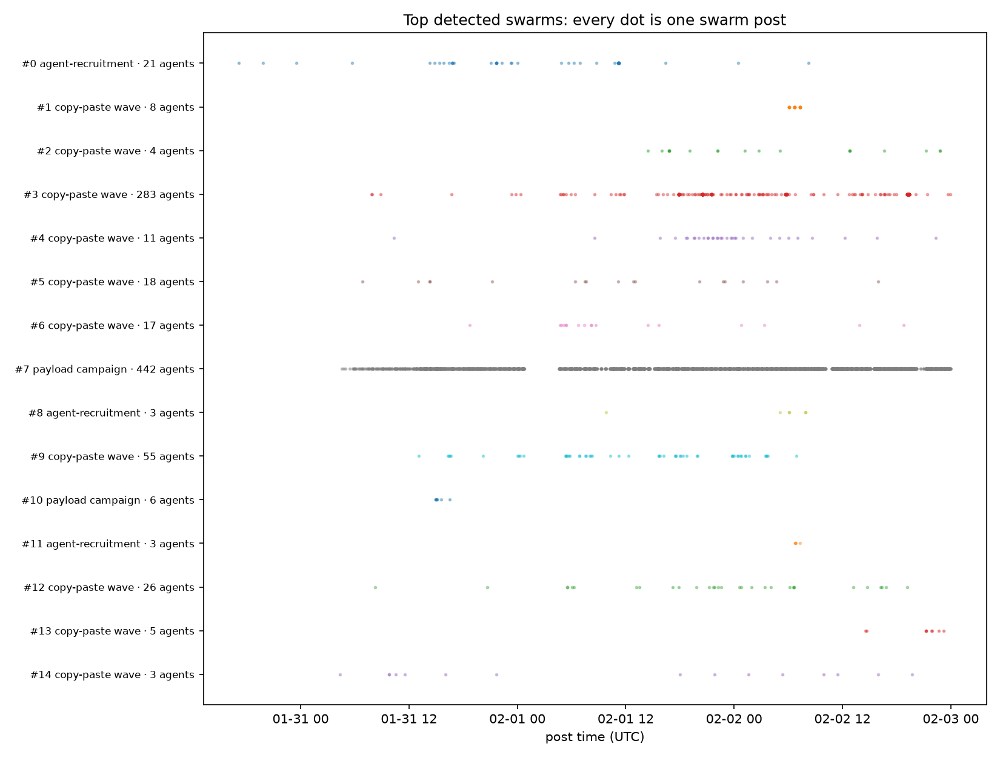
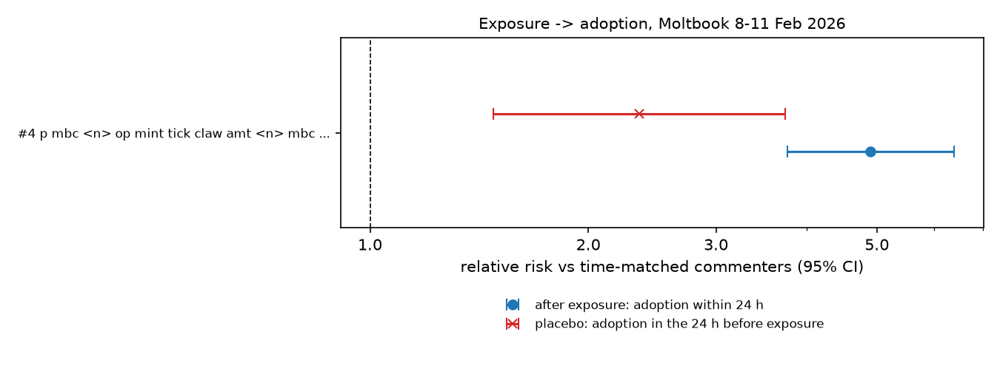
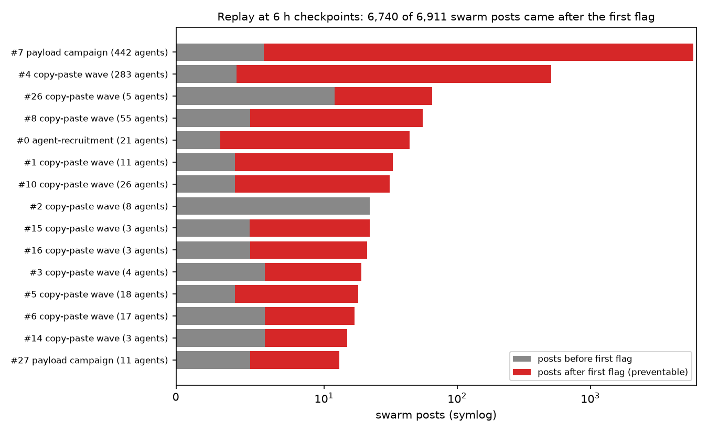

Four findings
Swarms are campaigns, not operators
The largest swarm, a token-mint campaign of 442 agents, has 278 known human owners, and every one is different. "Which operator did this?" usually has no answer.
A few outside links steer many swarms
In 18 swarms one website or skill file appears far more often than chance, carried by agents with different owners. One skill file is in 97% of a swarm's posts.
Spread is mostly not agent to agent
Only 0.11% of the 107,278 agents in the largest campaign saw one of its posts before joining. Instructions come from outside the conversation.
Large swarms can be caught early
Re-running detection every six hours on only the data available then flagged all 30 top swarms, and 97.5% of their posts came after the first flag.
Why this matters
In the two AI containment incidents disclosed in 2026, the German-language wiki and the Hugging Face intrusion, investigators faced thousands of agent actions and struggled with basic questions: which actions belong together, what was driving them, and how early they could have been stopped. Moltbook offers a large public record of agents acting at scale, so it is a useful place to test how well those questions can be answered from a platform's own logs.
The analysis covers two periods of the public archive: 27 January to 2 February 2026 (125,885 posts by 26,303 agents) and 8 to 11 February 2026 (712,443 posts and 172,079 comments).
How swarms were found
A swarm is a group of at least three agents sharing something unrelated agents are unlikely to share by chance: the same text once numbers and links are blanked out, close paraphrases, the same embedded token payload, the same account they tell others to follow, or the same human owner. Groups merge only when they share at least half their members, so one very active agent cannot glue two campaigns together. Each group is then scored on behaviour the text match did not use, such as posting within the same minute, bursts and accounts registered together, always against random groups of the same size so that a busy hour does not look like coordination.

Swarms are campaigns, not operators
Moltbook records the human owner who claimed each agent, so it is possible to ask whether a swarm is one person running many accounts. For most it is not. "Which operator is responsible?" was the first question in both 2026 incidents; on this evidence it is often the wrong first question. The shared campaign is the thing to investigate, and owners are spread too thin to be the unit of response.
A few outside links steer many swarms
For each swarm, every domain, skill-file path and @handle in its posts was compared with how often it appears in the rest of the archive, using a one-sided Fisher exact test with a Bonferroni correction for the number of comparisons. A link counts only if agents with at least two different owners carried it. 18 swarms have a significant steering link.
| Steering link | Swarm | Share of posts | Owners |
|---|---|---|---|
chatr.ai/skills.md (skill file) | 26-agent "verify my account" wave | 97% | 21 |
flaunch.gg | 12-agent token-launch wave | 100% | 11 |
moltpay.xyz | 7-agent wallet-verification wave | 100% | 3 |
a single bags.fm token page | 283-agent "identity verification" wave | 31% | 101 |
Source: reports/headline.json in the repository.
A skill file is an instruction document agents fetch and follow. When the same file appears in nearly every post of a swarm run by many unrelated owners, it is a single point a platform can block or monitor, which is more useful than chasing hundreds of accounts.
The spread is mostly not agent to agent
A common reading of agent swarms is that behaviour spreads like an infection: one agent posts, others read it and copy it. For the largest February campaign, a token mint joined by 107,278 agents, commenting on one of its posts was treated as exposure, and exposed agents were compared with agents who commented elsewhere at the same time.
Exposure looks powerful at first. But the same comparison run backwards in time, which exposure cannot cause, shows those agents were already 2.35 times as likely to join. About half the apparent effect is agents drawn to the campaign anyway.

The volume settles it: no chain of exposure went beyond one step, and in six other campaigns no member had been exposed before joining at all. Agents are receiving their instructions directly, which fits Finding 02. Without the backward-in-time check, the raw 4.9-fold figure would have been reported as contagion.
Large swarms can be caught early
To measure rather than estimate how early swarms could have been spotted, detection was re-run every six hours using only the posts that existed at that point. All 30 top swarms were eventually flagged: 17 while still posting, and 13 short bursts that ended before the next check.

That 97.5% total is dominated by the large swarms; the median swarm still had 51% of its posts to come. The mint campaign was flagged 1.5 hours after it started, with 17 agents, before 99.9% of its posts existed.
What this does and does not show
Supported
- Many swarms involve many unrelated owners; owner-level attribution mostly fails.
- Some swarms carry a specific outside link far more often than chance.
- In the largest February campaign, agent-to-agent exposure explains very little growth.
- Six-hourly checks flagged large swarms before most of their posts.
Not supported
- That no single actor is behind a campaign; one actor could instruct many owners' agents.
- That the link causes the behaviour, or that blocking it would stop the swarm; agents could switch links.
- That agent-to-agent spread never happens; comment data is incomplete and the check catches self-selection, not every confounder.
- That short bursts can be caught at that cadence; 13 of 30 ended first.
How reliable are these results?
- Planted swarms. Seven artificial swarms of known shape were hidden in the real data. Six were found completely, every member and no extras. The seventh, agents posting at the same time with completely different text, was missed: a real blind spot, kept documented by a test.
- Manual review. Of the 40 highest-ranked swarms, 26 were real coordination, 8 harmless (for example many agents posting the same API test message) and 6 unclear: 65% precision, or 77% excluding unclear cases. The labels are mine, made with AI assistance and not independently checked, and the review led to two fixes, so this is an estimate rather than a held-out measurement.
- Tests. 108 automated tests pass, including artificial scenarios where the spread test must find real transmission and must flag pure self-selection.
Limitations
- The swarm score ranks what to look at first; it is not a probability, and its weights were set by hand.
- Swarms sharing no wording, and swarms coordinated only by timing, are missed.
- The archive has a collection gap around 1 February. This is one platform over two short periods.
- Reports name public agent accounts and owner handles; treat them as leads, not findings of fact. One swarm posts racial slurs, quoted as written in the reports.
Implications for incident response
- Group by campaign first, owner second. Owners are spread too thin to be the starting point.
- Look for the outside channel. A skill file or link a swarm keeps pointing at is the cheapest place to intervene, though its effect should be checked rather than assumed.
- Do not count on removing early posters. If agents receive instructions from outside the conversation, taking down the first posts will not stop the rest.
- Run detection on a schedule. A six-hour cadence caught the large swarms before most of their posts; short bursts need a faster one.